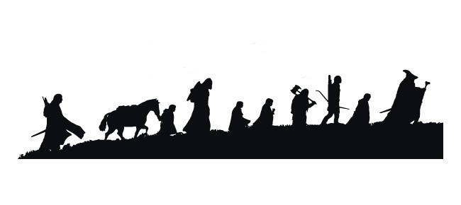

Non tutti quelli che vagano si sono persi, ma noi due sappiamo esattamente dove siamo diretti.
Questo non è solo un viaggio per il tuo compleanno o per celebrare il nostro anniversario tra le mura di
Hogwarts; è la nostra personale spedizione verso terre lontane (anche se con meno Orchi e più
metropolitana).
Che le strade di Londra siano gentili con i nostri passi e che il meteo sia favorevole.
Il mondo è là fuori tato e sono felice di percorrerlo con te.
Prepara lo zaino Mastro Hobbit, il 18 agosto si parte!
